6 The modern Olympic Games in numbers
“Faster, Higher, Stronger”
Background The modern Olympic Games have taken place every four years for over 120 years—barring the years of the two World Wars. They started small in 1896 in Athens and have expanded enormously to become one of the biggest global events.
Questions How many Olympic events have there been? Which events have taken place at many Games and which rarely? How have performances improved over the years? How have the numbers of countries and participants developed?
Sources Two datasets scraped from websites reporting Olympic results, one from a private source and one from Kaggle (Griffin (2019)).
Structure One dataset included 108789 competitors, reporting whether they won medals or not and, where available, their performance, just for Summer Olympics. The other dataset included all 222522 competitors with medals, age, height, weight and sex, but not performance data, and covered Summer and Winter Olympics.
6.1 How good are the data?
There is much data on the changing events at the Olympic Games (IOC (2022)), the new countries taking part, and especially on the improved performances of the participants over the years. Two datasets are studied for the Summer Olympics, one with performance data and one with no performance data but a more complete list of competitors.
The performance dataset for the Summer Olympics from 1896 to 2016 was scraped from the web in advance of the 2020 games that took place in 2021 because of the Covid pandemic. The data were used for commenting on the shape of the trend in improvement and not for any detailed analysis and were made available on request. A closer look uncovered a number of problems and illustrates how graphics can be used to support checking, editing, and restructuring data, as well as for exploring and displaying results.
The performance dataset had almost 110000 entries. A barchart of the over 1100 events reported there (Figure 6.1) reveals a long list with numbers of participants ranging from 1 to 2644. Some events only took place at one Olympic Games and there were various alternative spellings and misspellings of events, which is why there appear to be so many.
Code
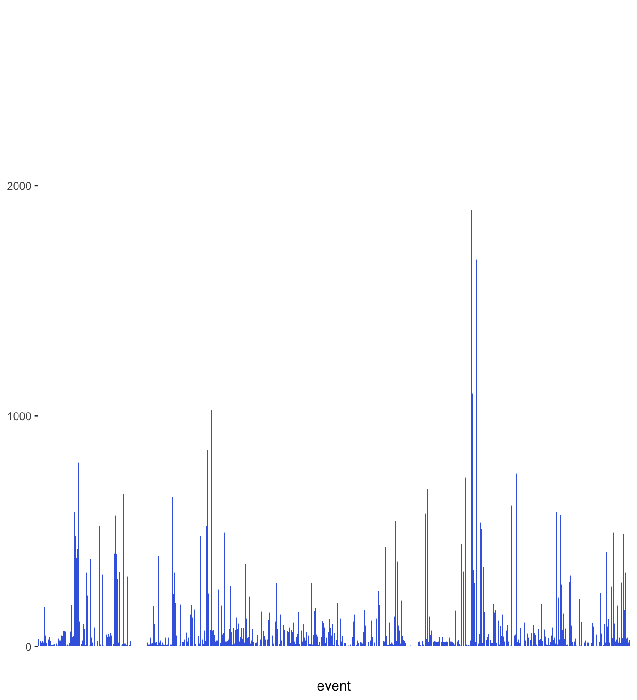
Figure 6.1: Summer Olympic events by total numbers of participants in the Games of 1896 to 2016, ordered lexicographically (the default), based on the first dataset
Events are grouped in sporting disciplines and looking at those instead also gives a surprisingly long list, ranging from athletics and swimming to cricket and basque-pelota. The top two disciplines in terms of participants, athletics and swimming, include many different events, as do some of the other disciplines.
Code
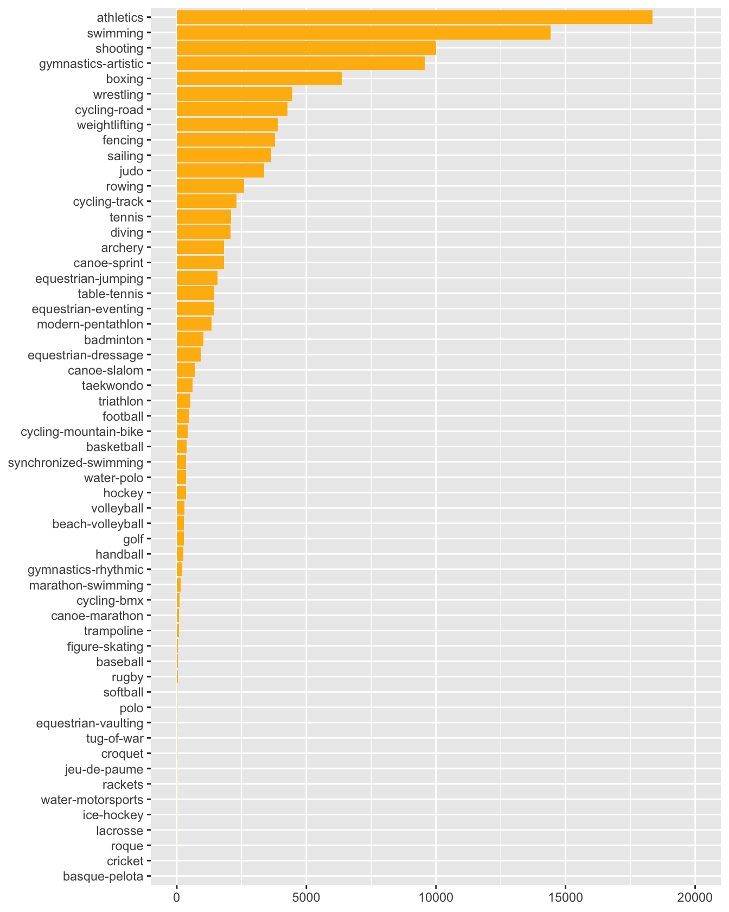
Figure 6.2: Summer Olympics sporting disciplines by total numbers of participants in the Games of 1896 to 2016, based on the first dataset
There are events for men and for women, and there are mixed and open events. Concentrating on the two most frequent disciplines, athletics and swimming, excluding mixed and open events, and restricting the dataset to gold medal winners gave Figure 6.3 showing the numbers of events at each Olympic Games. The patterns for the two disciplines are very different. After initial peaks before and just after the first World War, the number of athletics events for men barely changed. The number of athletics events for women increased steadily from a very low start in 1928. In swimming, the numbers of events for men and women followed similar paths from 1924 on.
Code
# Fix location and date
OlyX <- OlyX %>% separate(col=games, into=c("city", "year"), remove=FALSE, sep=-4)
OlyX <- OlyX %>% separate(col=city, into=c("city"), sep=-1)
OlyX <- OlyX %>% mutate(year=as.numeric(year))
# Remove participants who did not finish
OlyX <- OlyX %>% filter(!rank %in% c(NA, "DSQ", "DNF", "DNS"))
# Fix event
OlyX <- OlyX %>% separate(event, into = c("Event", "Sex"), sep = "\\-(?!.*-)", remove = FALSE)
OlyX <- OlyX %>% filter(!Sex %in% c("mixed", "open"))
OlyX <- OlyX %>% mutate(result_type = tolower(result_type))
# Create dataset with only gold medal winners
xG <- OlyX %>% filter(medalType=="GOLD")
xGas <- xG %>% filter(discipline %in% c("athletics", "swimming"))
xGas <- xGas %>% group_by(Sex, year, discipline) %>% summarise(nn=n())
xGas <- xGas %>% ungroup() %>% complete(year=seq(1896, 2016, 4), nesting(Sex, discipline)) %>% filter(!is.na(discipline))
olyASnY <- ggplot(xGas, aes(year, nn, group=Sex, colour=Sex)) + geom_line() + facet_wrap(vars(discipline)) + ylab(NULL) + xlab(NULL) + scale_colour_manual(values=c("springgreen3", "purple2")) + theme(legend.position="bottom", legend.title=element_blank())
olyASnY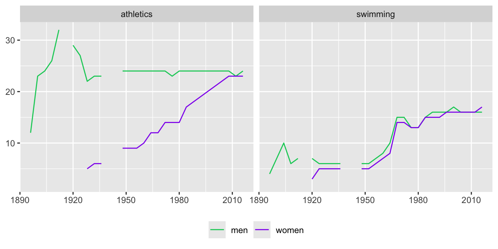
Figure 6.3: Numbers of athletics and swimming events for men and women at the Summer Olympics from 1896 to 2016
Figure 6.4 has more detail, showing which events took place for men and for women at which games. It was drawn to investigate why there appeared to be so many events listed. Despite the small print, two problems can readily be seen. The long line of dots to the right of each plot and the matching gaps above suggest that there was an issue with how athletics and swimming events were named at Beijing in 2008. The data source for Beijing used “-metres”, where the sources for other Olympics used “m”. The straggly lines to the left of the two plots for men show that some events only took place at early games (e.g. long-jump-standing and underwater-swimming). A minor issue is that there are individual gaps that will need to be investigated further.
Comparing the top two displays for athletic events, it is clear that women did not take part until much later than men. Athletic events for women began at the 1928 Olympics. Comparing the two displays on the right shows that swimming events for women began earlier, at the 1912 Olympics. Why were women allowed to swim before they could run?
Code
xGx <- xG %>% group_by(Event) %>% mutate(nn=n())
# Order events by numbers of golds won (men + women)
xGx <- xGx %>% ungroup() %>% mutate(eventG=fct_reorder(Event, nn))
xGAS <- xGx %>% filter(discipline %in% c("athletics", "swimming"))
ggplot(xGAS, aes(year, eventG)) + geom_point(aes(colour=Sex)) + ylab(NULL) + xlab(NULL) + facet_grid(cols=vars(Sex), rows=vars(discipline), scales="free_y") + scale_x_continuous(breaks=seq(1896, 2016, 20)) + scale_colour_manual(values=c("springgreen3", "purple2")) + theme(legend.position="none", panel.spacing.x=unit(1,"lines"))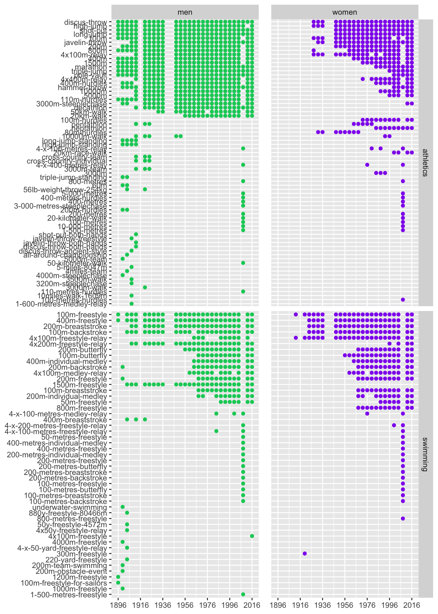
Figure 6.4: Athletics and swimming events for men and women for which gold medals were awarded by Olympic year, ordered by numbers of gold medals awarded
After fixing the event names for the Beijing Olympics and setting aside the early events, displays were drawn separately for athletics and swimming (Figures 6.5 and 6.6). The correcting code was applied to the whole dataset and some of the corrections for Beijing fixed other minor issues. The ordering of the events is a little different from that in Figure 6.4 because the corrections have changed the total numbers of gold medals awarded for events.
Code
# Correct data typos
OlyX$event <- str_replace(OlyX$event, "-metres", "m")
OlyX$event <- str_replace(OlyX$event, "1-500m", "1500m")
OlyX$event <- str_replace(OlyX$event, "10-000m", "10000m")
OlyX$event <- str_replace(OlyX$event, "3-000m", "3000m")
OlyX$event <- str_replace(OlyX$event, "-kilometer", "km")
OlyX$event <- str_replace(OlyX$event, "5-000m", "5000m")
OlyX$event <- str_replace(OlyX$event, "-x-", "x")
OlyX$event <- str_replace(OlyX$event, "20km-race-walk", "20km-walk")
OlyX$event <- str_replace(OlyX$event, "4x100m-freestyle-men", "4x100m-freestyle-relay-men")
OlyX <- OlyX %>% separate(event, into = c("Event", "Sex"), sep = "\\-(?!.*-)", remove = FALSE)
# Fix variables in new corrected data (xG must be redefined because OlyX has been changed)
xG <- OlyX %>% filter(medalType=="GOLD")
xG <- xG %>% group_by(Event) %>% mutate(en=n()) %>% ungroup()
xGZ <- xG %>% filter(en>4) %>% mutate(eventH=fct_reorder(Event, en))
xGZA <- xGZ %>% filter(discipline %in% c("athletics"))
ggplot(xGZA, aes(year, eventH)) + geom_point(aes(colour=Sex)) + ylab(NULL) + xlab(NULL) + facet_grid(cols=vars(Sex), scales="free_y") + scale_x_continuous(breaks=seq(1896, 2016, 20)) + scale_colour_manual(values=c("springgreen3", "purple2")) + theme(legend.position="none", panel.spacing.x=unit(1,"lines"))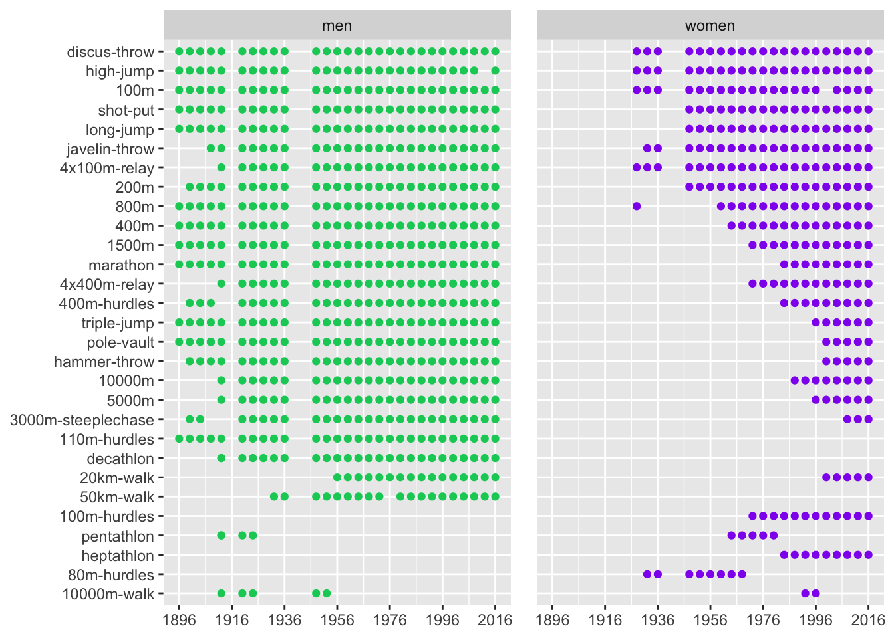
Figure 6.5: Athletic events by Olympic year after amendments
Some events were only for men and some only for women. Men compete in the decathlon of ten events, whereas women compete in the heptathlon of seven events (and in earlier Games only in the pentathlon of five events). Men run the 110 m hurdles, while women run the 100 m hurdles (and formerly the 80 m hurdles). The women’s pentathlon and the women’s 80 m hurdles were excluded from further analysis. Other events that have taken place rarely (defined here as less than six times for men or women) were also excluded. There were gaps due to events not taking place or medals not being awarded. The men’s 50 km walk took place at all Games from 1932 to 2016 except for 1976. The winner of the men’s high jump in 2012 was later disqualified for doping offences and the other medals promoted in 2021. That had not been done at the time the dataset was scraped and so there was no gold medal winner and no data point in Figure 6.5. For a number of reasons related to doping, no gold medal was awarded for the women’s 100 m in 2000.
The 800 m for women stands out as first taking place at the Amsterdam Games of 1928 and then not again until the Olympics in Rome in 1960. The men in charge of the Olympic Games decided that the event was too strenuous for women and were supported by some highly dubious reporting in the newspapers (English (2015)). According to Robinson (2012), Harold Abrahams, the famous English runner, Olympic official, and journalist, said “The sensational descriptions are much exaggerated I can assure you.” Others must have held other opinions.
Code
xGZS <- xGZ %>% filter(discipline %in% c("swimming"))
ggplot(xGZS, aes(year, eventH)) + geom_point(aes(colour=Sex)) + ylab(NULL) + xlab(NULL) + facet_grid(cols=vars(Sex), rows=vars(discipline), scales="free_y") + scale_x_continuous(breaks=seq(1896, 2016, 20)) + scale_colour_manual(values=c("springgreen3", "purple2")) + theme(legend.position="none", panel.spacing.x=unit(1,"lines"))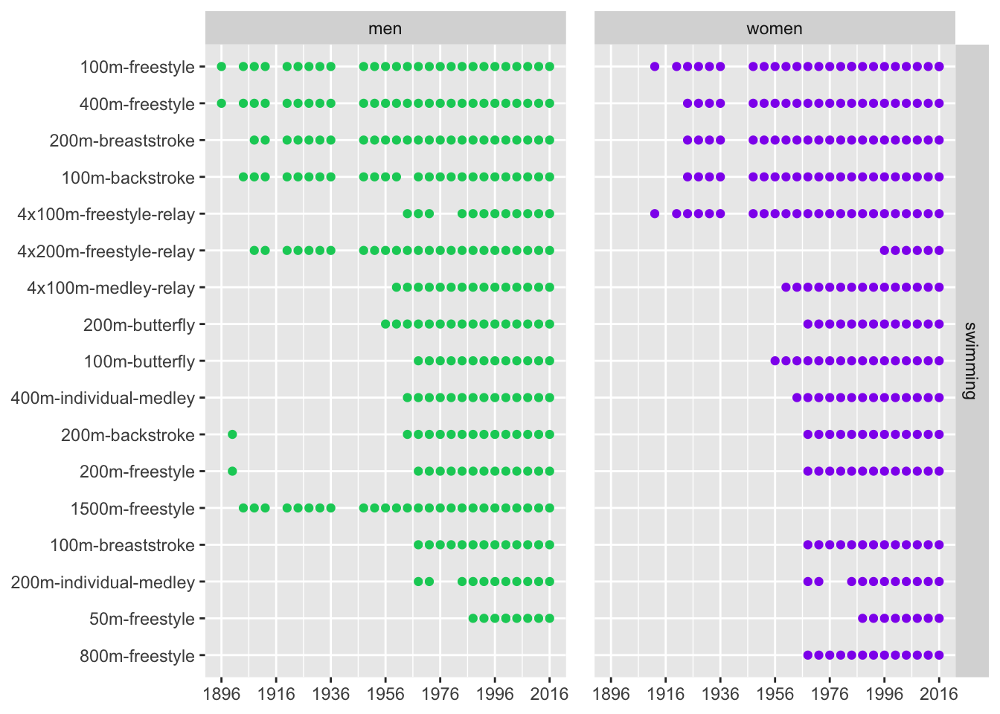
Figure 6.6: Swimming events by Olympic year after amendments
Since 1996 women have swum the same events as men, with one exception. The men’s longest freestyle event was 1500 m, while the women’s was 800 m. Interestingly, for the first time at the Tokyo Olympics of 2021, both races are now swum by both sexes.
Two striking gaps are apparent in men’s swimming events. Both the 200 m backstroke and freestyle were raced in 1900 in Paris and not again until 1964 (backstroke) and 1968 (freestyle). Results are missing for the men’s 400 m freestyle relay in 1976 and 1980, presumably a scraping problem. Results are not included for either men or women for the 200 m individual medley in 1976 and 1980, because the events did not take place at those Games.
6.2 How much have performances improved?
Performances in a few disciplines, such as in swimming and athletics, can be directly compared, although the continual improvements in technique, equipment, training, and support of all kinds, as well as the growing population of athletes have to be borne in mind. Rule changes can also have significant effects. Most other disciplines such as boxing, gymnastics or sailing are even harder to compare over time.
Gold Medal performances are sometimes world records, more often not. The best performance in one Olympics may not be as good as the best performances in earlier Olympics. Athletes may miss out because of injury or ill health or because their country boycotts a Games (as happened for various reasons at the Games of 1976, 1980, 1984). In the early years travel time and costs limited participation. So Olympic performances are not ideal for studying developments over time. Nevertheless, the Olympic Games offer regular simultaneous checks on performance changes in many sporting events and that has its advantages too.
There were a number of additional problems with the data. Some values were missing (e.g., several for the pole vault for men). The heptathlon and decathlon results were reported on quite different scales in different years. A few performances at some games were reported with a ‘w’ at the end signifying wind assistance. This means that there was a tail wind of more than 2 m/s, invalidating record attempts but not the result. It only applies to certain sprint races, the triple jump and long jump. Four 100 m races were affected and one complete long jump competition. Three triple jump gold medal performances were marked as wind-assisted. For jumps, it made no difference once the ‘w’ was removed. For 100 m races the times were in seconds instead of thousandths of seconds. This included times in Jesse Owens’ 100 m final at the 1936 Olympics in Berlin. There were other issues that had to be resolved. Only events that had taken place at least six Olympics were included.
In the analysis carried out by the scrapers of the dataset the gold medal performances were standardised by calculating how much better or worse they were in percentage terms than the average of the gold medal winners over all the Games at which the event took place. For events that have been included in the Games a long time the overall average then tended to reflect a poorer performance than if results were only included from more recent games. The solution adopted here is to compare results with the average over the Olympics from 1996 to 2016.
Figure 6.7 shows data for individual athletics events grouped by sex and whether they are a field event like the shot put (higher numbers are better) or a track event like the 100 m (faster times are better). The percentage differences between the gold medal performances at each Games and the averages of gold performances over the six Games from 1996 to 2016 are plotted against years to show the overall trends.
Code
xG <- xG %>% group_by(event) %>% mutate(en=n()) %>% ungroup() #grouping by event, not Event, this time
xGy <- xG %>% filter(discipline %in% c("athletics", "swimming"), en > 5)
xGy <- xGy %>% filter(!is.na(result_value))
zGy <- xGy %>% filter(!(result_value=="mark unknown"))
zGy <- zGy[!duplicated(zGy %>% select(games, discipline, event, result_value)),]
zGy <- zGy %>% filter(!Event %in% c("heptathlon", "decathlon", "pentathlon"))
zGy <- zGy %>% filter(!Event %in% c("80m-hurdles"))
zGy <- zGy %>% mutate(result_value=ifelse(result_value=="54 1/5", 54.2, result_value))
zGy <- zGy %>% mutate(rv=gsub("([0-9,.])w", "\\1", result_value))
zGy <- zGy %>% filter(!(year %in% c("1900", "1904") & event=="3000m-steeplechase-men"))
zGy <- zGy %>% mutate(rv=as.numeric(rv))
zGy9616 <- zGy %>% filter(year > 1992) %>% group_by(event) %>% summarise(mrv=mean(rv, na.rm=TRUE)) %>% select(event, mrv)
zGyj <- left_join(zGy, zGy9616)
zGyj <- zGyj %>% mutate(Rv=100*(rv/mrv-1))
zGyj <- zGyj %>% mutate(rv=ifelse(Rv < -99, 1000*rv, rv))
zGyj <- zGyj %>% mutate(Rv=100*(rv/mrv-1))
zGyjA <- zGyj %>% filter(discipline %in% c("athletics"))
zGyjA <- zGyjA %>% ungroup() %>% complete(year=seq(1896,2016,4), nesting(Sex, result_type, Event))
to_lab <- as_labeller(c("distance"="field", "time"="track"))
olyAX <- ggplot(zGyjA, aes(year, Rv, group=Event)) + geom_line(colour="grey70") + facet_grid(cols=vars(Sex), rows=vars(result_type), labeller=labeller(result_type=to_lab), scales="free_y") + geom_hline(aes(yintercept=0), linetype="dashed", colour="grey60") + theme(legend.position="none", panel.spacing.x=unit(1,"lines")) + xlab(NULL) + ylab(NULL)
olyAX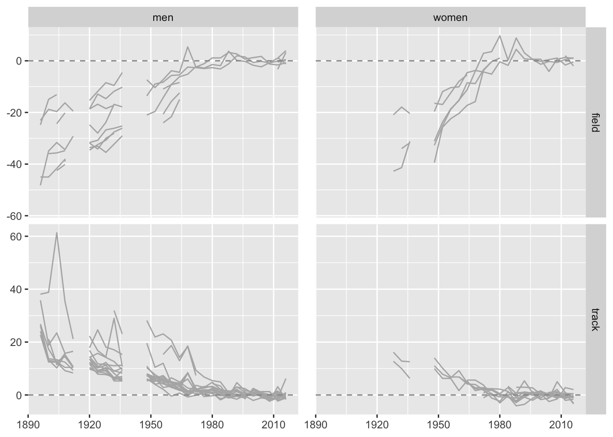
Figure 6.7: Percentage differences in gold medal performances in athletics events compared with averages over the last six Games
Scales are primarily determined by relatively weak performances at early Games and mostly there is a general improvement. Studying the graphics closely, other features are apparent. There are no early data for women, because female athletics events were first held at the 1928 Games in Amsterdam. Some events were introduced later than others. There are some odd peaks and some surprising gaps (in addition to the gaps for the two World Wars). There are many missing data points for the field events, where there should be 8 events for the men and 6 for the women for these data. The averages were calculated ignoring missings, so for three events only one value contributed to the average and for five events only two. A more refined analysis would be more reassuring, but is unlikely to make much difference to the overall impression.
Code
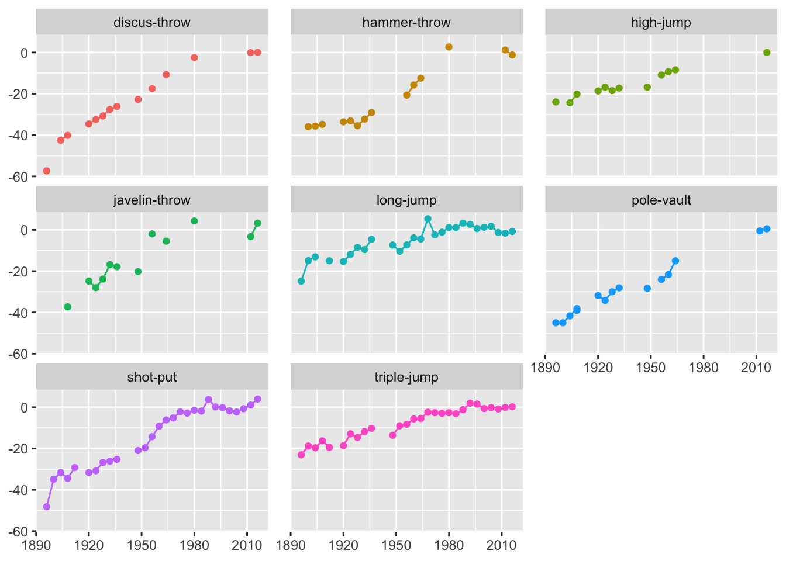
Figure 6.8: Field events for men: percentage differences in gold medal performances compared with averages over the last six Games
The four graphics were separately faceted by event for more details. Figures 6.8 and 6.9 show men’s track and field events. The graphics for women’s events showed similar issues, but fewer and less dramatic ones. For field events a lot of data is missing, for the pole vault and high jump in particular. These problems must have been due to failed data scraping. Early low values dominate, but the values higher than the recent averages are also worth studying. Bob Beamon’s famous long jump at Mexico City 1968 is still the Olympic record and the second longest jump of all time. The discus, hammer throw, and javelin could all be checked in more detail.
Code
zGyjA <- zGyjA %>% mutate(EventX=factor(Event, levels=c("100m", "110m-hurdles", "200m", "400m", "400m-hurdles", "4x100m-relay", "800m", "1500m", "4x400m-relay", "3000m-steeplechase", "5000m", "10000m", "20km-walk", "50km-walk", "marathon")))
ggplot(zGyjA %>% filter(Sex=="men", result_type=="time"), aes(year, Rv, colour=EventX)) + geom_line() + geom_point() + theme(legend.position="none", panel.spacing.x=unit(1,"lines")) + xlab(NULL) + ylab(NULL) + facet_wrap(vars(EventX), ncol=3)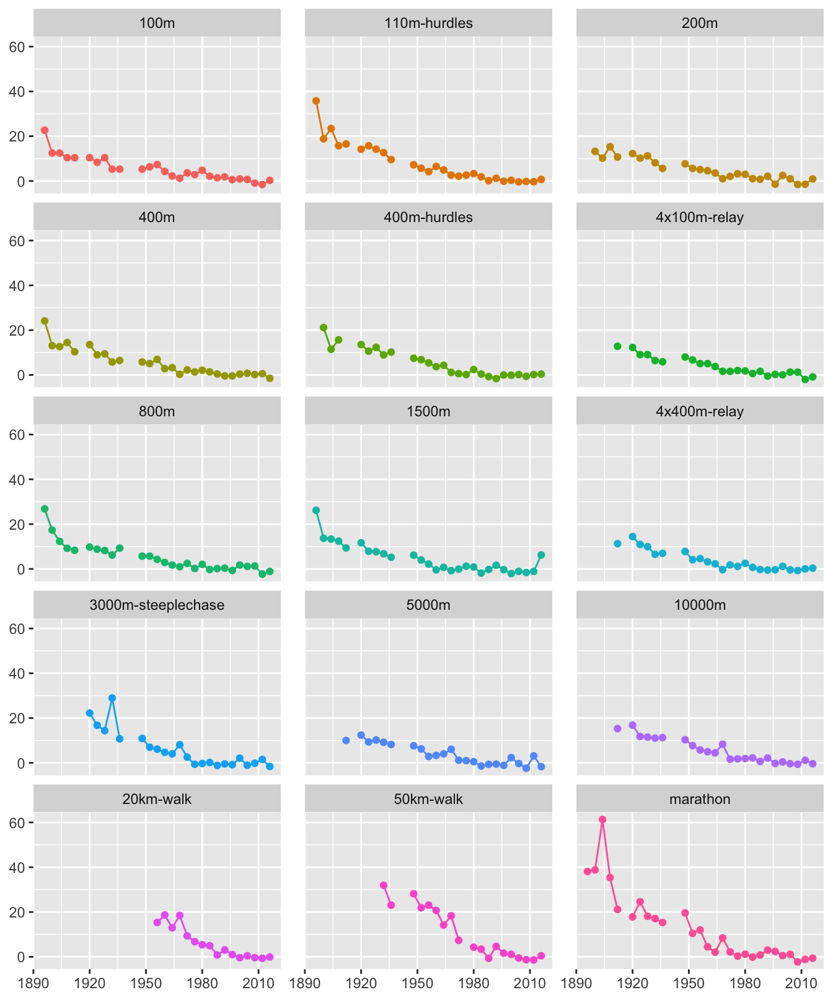
Figure 6.9: Track events for men: percentage differences in gold medal performances compared with averages over the last six Games, events are ordered by distance
The time for the 1904 marathon race in Figure 6.9 is clearly out of line. According to Abbott (2012), “the 1904 marathon was less showstopper than sideshow, a freakish spectacle” and “The outcome was so scandalous that the event was nearly abolished for good.” The time for the 3000 m steeplechase in 1932 also looks wrong. Due to an error in lap counting, the runners had to run an extra lap of the track.
Sometimes particular events stand out. Looking at the swimming results, most have similar patterns for men and women, but one stands out in each case, interestingly the same event, the 100 m freestyle, as Figure 6.10 shows:
Code
Swim <- zGyj %>% filter(discipline=="swimming") %>% mutate(EventX=factor(case_when(
event=="100m-freestyle-women" ~ "w100f",
event=="100m-freestyle-men" ~ "m100f",
.default = "Rest"
)))
Swim <- Swim %>% ungroup() %>% complete(year=seq(1896,2016,4), nesting(Sex, EventX, Event))
ggplot(Swim %>% filter(year > 1919), aes(year, Rv, group=Event)) + geom_line(data=Swim %>% filter(year > 1919, EventX=="Rest"), colour="grey80") + geom_line(data=Swim %>% filter(year > 1919, !EventX=="Rest"), aes(colour=EventX)) + facet_wrap(vars(Sex), nrow=1) + theme(legend.position="none", panel.spacing.x=unit(1,"lines")) + xlab(NULL) + ylab(NULL) + scale_colour_manual(values=c("springgreen3", "purple2"))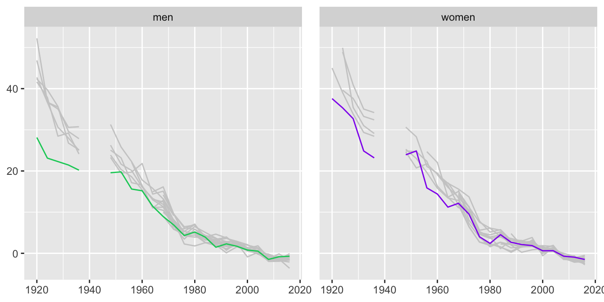
Figure 6.10: Percentage differences in gold medal performances in swimming events for men and women compared with averages over the last six Games since 1920 with the 100 m freestyle highlighted
Perhaps strong performances were achieved earlier for the 100 m or there have been greater relative improvements in other events. The men’s 100 m freestyle champion in 1924 and 1928 was Johnny Weissmuller who went on to play Tarzan in Hollywood movies. He won five gold medals in all (and had five wives).
6.3 How many countries and individuals competed?
The second Olympics dataset covering both Winter and Summer Olympics is available from Kaggle (Griffin (2019)). This has also been scraped from the web and aimed to include all participants from the modern Olympic Games, not just finalists, as in the first dataset. It also includes the 1906 Intercalated Games, then considered Olympic Games, but not now and not included here. Medals, if any, are reported, but not the performances. The events are named differently in various ways in the two datasets, which makes it difficult to merge them. For example, in the first dataset there is the cycling event “team-pursuit-4000m-men” and in the second one it is called “Men’s Team Pursuit, 4,000 metres”. More surprisingly—and unexpectedly—the second dataset includes the participants in the Arts Competitions that were held in the Games of 1912 to 1948. This is how the famous painters Max Liebermann and Sir John Lavery were both able to participate in the 1928 Games.
The numbers of countries sending teams for men and women to the Summer Games are shown separately in Figure 6.11.
Code
data(OlympicPeople)
uOly <- OlympicPeople %>% group_by(Year, Sex) %>% distinct(NOC) %>% summarise(nn=n())
uOly <- uOly %>% ungroup() %>% complete(Year=seq(1896, 2016, 4), nesting(Sex))
ggplot(uOly, aes(Year, nn, group=Sex, colour=Sex)) + geom_line() + geom_point() + ylab(NULL) + xlab(NULL) + scale_colour_manual(values=c("purple2", "springgreen3")) + theme(legend.position="none")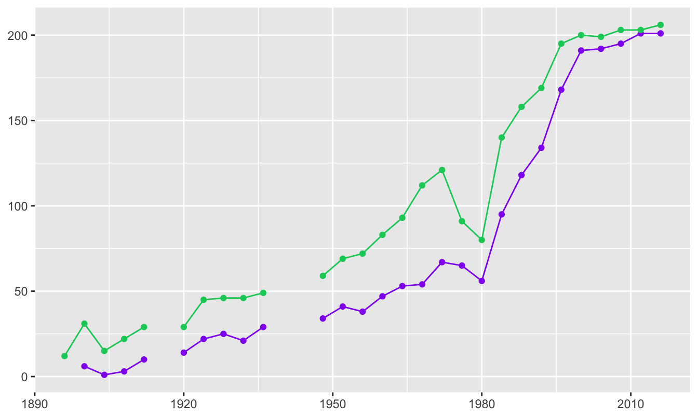
Figure 6.11: Numbers of countries competing at the Olympic Games over the years (male numbers in green above, female in purple below)
The number of countries has steadily increased with the exception of the 1976 Montreal Games (when 29 countries, mainly African, did not take part because New Zealand had played South Africa at rugby and had not been banned from the Olympics as a consequence) and the 1980 Moscow Games (when over 60 countries did not take part because of the Soviet invasion of Afghanistan). There was also a boycott in 1984 at Los Angeles when 14 countries led by the Soviet Union did not take part. Since the 2000 Games in Sydney the numbers of countries with female teams is almost equal to the number of countries with male teams. (An elegant and more detailed visualisation of the numbers of countries taking part can be found at Nicault (2021).)
Code
uOlyp <- OlympicPeople %>% group_by(Year, Sex) %>% summarise(nn=n())
uOlyp <- uOlyp %>% ungroup() %>% complete(Year=seq(1896, 2016, 4), nesting(Sex))
ggplot(uOlyp, aes(Year, nn, group=Sex, colour=Sex)) + geom_line() + geom_point() + ylab(NULL) + xlab(NULL) + scale_colour_manual(values=c("purple2", "springgreen3")) + theme(legend.position="none")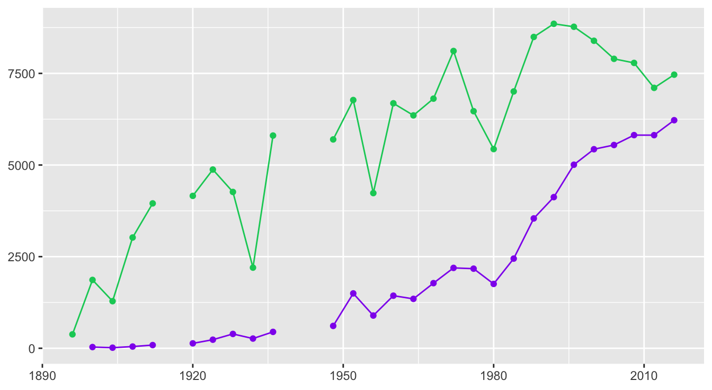
Figure 6.12: Numbers competing at the Olympic Games over the years
More males compete as can be seen from Figure 6.12 showing the numbers of participants by sex. While the number of female participants has risen relatively steadily, the numbers of male participants declined at Los Angeles in 1932 (because of the Depression), at Melbourne in 1956 (possibly because the Games were held in November and December, the Australian summer), and at Moscow in 1980 (because many countries did not take part). There was also something of a reduction in numbers of male participants between the peak of 8772 in 1996 at Atlanta and the low of 7105 at London in 2012.
Looking at the time series for individual countries picks out a feature that is obvious with hindsight (Figure 6.13), there are more participants from a country when it is the host. The early peaks of 1900 for France, 1904 for USA, 1908 for Great Britain, 1912 for Sweden, and 1920 for Belgium are unmistakable. Travel time and costs would have influenced the participation of other nations then. Also obvious are the peaks of 1968 for Mexico, 1976 for Germany, 2004 for Greece, 2008 for China, and 2016 for Brazil. Less obvious are 1896 for Greece, 1924 for France, 1936 for Germany, 1948 for Great Britain, 1952 for Finland, 1956 and 2000 for Australia, 1964 for Japan, 1988 for Korea, and 1992 for Spain. Other peaks may be due to (relative) geographic nearness, such as numbers of Korean and Australian participants at Tokyo in 1964.
Code
OlympicPeople <- OlympicPeople %>% ungroup() %>% mutate(NOC=ifelse(NOC %in% c("FRG", "GDR"), "GER", NOC))
OlympicPeople <- OlympicPeople %>% ungroup() %>% mutate(NOC=ifelse(NOC %in% c("EUN", "URS"), "RUS", NOC))
uOlyP <- OlympicPeople %>% group_by(Year, NOC) %>% summarise(pn=n())
uOlyPx <- uOlyP %>% mutate(NOC=factor(NOC))
uOlyPt <- uOlyPx %>% ungroup() %>% complete(Year=seq(1896,2016,4), nesting(NOC))
hosts <- c("GRE", "FRA", "USA", "GBR", "SWE", "BEL", "NED", "GER", "FIN", "AUS", "ITA", "JPN", "MEX", "CAN", "RUS", "KOR", "ESP", "CHN", "BRA")
uY <- uOlyPt %>% filter(NOC %in% hosts) %>% mutate(NOC=fct_drop(NOC), NOC=fct_relevel(NOC, "GRE", "FRA", "USA", "GBR", "SWE", "BEL", "NED", "GER", "FIN", "AUS", "ITA", "JPN", "MEX", "CAN", "RUS", "KOR", "ESP", "CHN", "BRA"), noc=fct_recode(NOC, AUSTRALIA="AUS", BELGIUM="BEL", BRAZIL="BRA", CANADA="CAN", CHINA="CHN", SPAIN="ESP", FINLAND="FIN", FRANCE="FRA", `GREAT BRITAIN`="GBR", GERMANY="GER", GREECE="GRE", ITALY="ITA", JAPAN="JPN", KOREA="KOR", MEXICO="MEX", NETHERLANDS="NED", RUSSIA="RUS", SWEDEN="SWE", USA="USA"))
ggplot(uY, aes(Year, pn, group=NOC, colour=NOC)) + geom_point() + geom_line() + ylab(NULL) + xlab(NULL) + theme(legend.position="none", panel.spacing.x=unit(1,"lines")) + facet_wrap(vars(noc), ncol=4)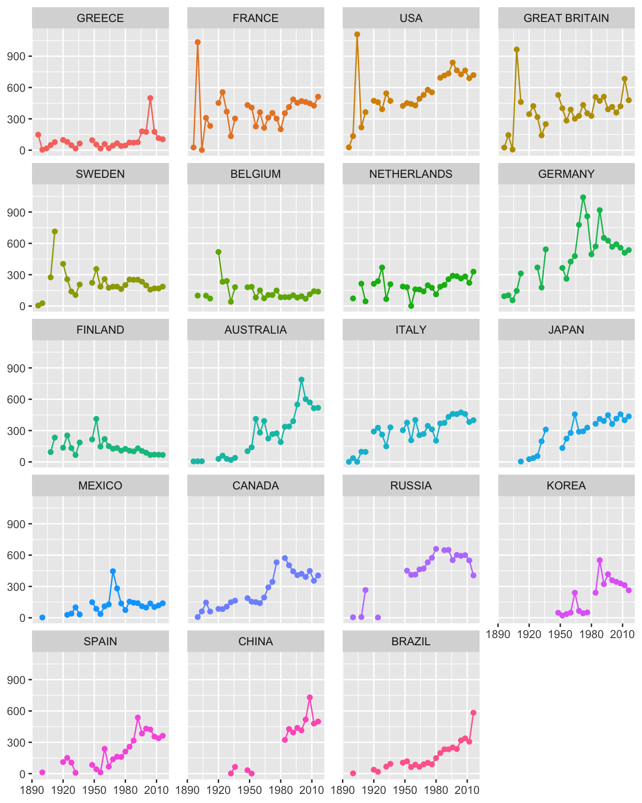
Figure 6.13: Numbers of participants at the Olympics for countries who have hosted the Games (in order of first hosting)
The figures for Russia are for Imperial Russia before 1914, for the Soviet Union till 1988, for the Unified team of 12 of the former 15 Soviet Union republics in 1992, and for Russia since 1996. In 1924 no Soviet Union team took part, but three competitors in the Arts Competitions called themselves Russian. Figures for Germany include those from both East and West between 1968 and 1988.
Code
uOlyQ <- OlympicPeople %>% distinct(Year, City)
uOlyQ <- uOlyQ %>% filter(!(Year=="1956" & City=="Stockholm"))
uOlyQ <- uOlyQ %>% arrange(Year)
uOlyQ$hCountry <- c("GRE", "FRA", "USA", "GBR", "SWE", "BEL", "FRA", "NED", "USA", "GER", "GBR", "FIN", "AUS", "ITA", "JPN", "MEX", "GER", "CAN", "RUS", "USA", "KOR", "ESP", "USA", "AUS", "GRE", "CHN", "GBR", "BRA")
uOlyS <- left_join(OlympicPeople, uOlyQ)
uOlyS <- uOlyS %>% group_by(Sex, Year, hCountry, NOC) %>% summarise(pn=n()) %>% ungroup() %>% group_by(Sex, Year) %>% mutate(N=sum(pn))
uOlyH <- uOlyS %>% ungroup() %>% filter(NOC==hCountry)
uOlyH <- uOlyH %>% mutate(sh=pn/N)
uOlyH <- uOlyH %>% complete(Year=seq(1896, 2016, 4), nesting(Sex))
ggplot(uOlyH, aes(Year, sh, group=Sex, colour=Sex)) + geom_point() + geom_line() + ylab(NULL) + xlab(NULL) + theme(legend.position="none") + scale_y_continuous(labels = scales::percent) + scale_colour_manual(values=c("purple2", "springgreen3"))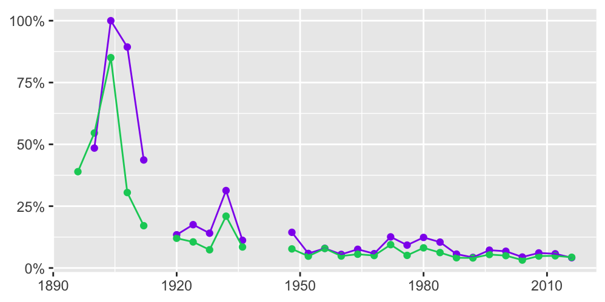
Figure 6.14: Percentages of host country participants at the Olympic Games over the years for women (purple) and men (green)
Host country dominance at the early Olympics is shown in Figure 6.14 for both women and men. In 1904 at St Louis, only 16 women took part and they were all American. 85% of the participants at the 1904 Olympics were American.
Answers The dataset including performance data needed a lot of editing, but included much interesting information. Gold medal performances have improved since the early Games, but not so much lately. More and more countries take part in the Olympic Games and the number of competitors has increased as well. Individual countries have had their highest number of participants when they have been host nation.
Further questions How do changes in performance over time look when logarithms of results are used instead of actual results? Might it be useful to compare results to world records over time? Is there evidence of possible use of doping in earlier Games before more stringent controls were introduced?
Graphical takeaways
- Good orderings make patterns visible. (Figure 6.4)
- After fixing errors and excluding unusual cases, redrawn graphics reveal more information. (Figures 6.5 and 6.6)
- When time series overlap, use faceting to pick out patterns in individual series. (Figures 6.8 and 6.9)
- Regular time series should be plotted so that it is clear where data are missing. Plotting both points and lines helps. (Figures 6.11 to 6.14)